News
10/25/16
Prof. Subith Vasu has been selected as the receipient of the 2017 ASME's Dilip Ballal Early Career Award. This is an international award given to honor individuals who have outstanding accomplishments in the field of gas turbine technology during the beginning of their careers. [Link]
[News link about this award]
10/12/16
Congratulations to Anthony Terracciano for successfully defending his Ph.D. thesis. Prof. Vasu co-advised Anthony along with Prof. Nina Orlovskaya.
9/5/16
VASU LAB in space!!. As part of our FAA funded program, we are making space sensors for detecting gas/fuel/oxidizer leaks and monitoring crew cabin air quality for commercial space vehicles. The sensor was flown at 122, 000 ft using NASA's high-altitude balloons. Here are some pictures: [see news article in UCF today]
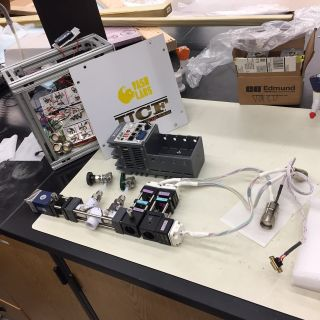
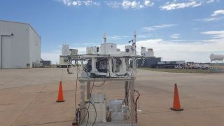
[More about FAA's Center of Excellence for Commerical Space Transportation]
9/3/16
4 papers from our group will be presented at the 2017 AIAA SciTech, Grapevine, TX, 9-13 Jan. 2017.
- Jet Fuel Thermal Stability Investigations using Ellipsometry, Leigh Nash; Jennifer Klettlinger, Subith Vasu;
- Temperature Jump Pyrolysis Studies of RP-2 Fuel, Owen Pryor; Steven Chambreau; Ghanshyam Vaghjiani; Subith Vasu;
- Pyrolysis of RP-2 and Surrogate Fuels in a Jet Stirred Reactor Coupled with Synchrotron Photo Ionization Mass Spectrometry, Ghazal Barari; Subith Vasu;
- High-Speed Imaging of the Dynamics of H2/O2 Ignition at Low to Moderate Temperatures in a Shock Tube, Erik Ninnemann; Batikan Koroglu; Owen Pryor; Samuel Barak; Kareem Ahmed; Subith Vasu;
9/1/16
Congratulations to Joseph Lopez and Michael Villar for winning the highly competitive NASA FSGC fellowships.
Erik Ninnemann just completed the prestigious 2016 DOE summer research at Oak Ridge National Lab.
7/25/16
Prof. Subith Vasu, Leigh Nash, and Dr. Ghazal Barari attended the 2016 AIAA Joint Propulsion meeting in Salt Lake City, UT. We presented a paper titled "Shock Tube Studies of Advanced Biofuels, AIAA 2016-4691". [Link]
6/16/16
Prof. Subith Vasu attended the 2016 ASME Turbo Expo in seoul, South Korea. The group presented a paper titled "Combustion of aldehydes in the negative temperature coefficient region: Products and pathways," Paper no: GT2016-58025. [Link]
4/8/16
Congratulations to Owen Pryor and Kyle Thurmond for successfully defending their M.S.thesis.
3/4/16
President Dr. Hitt called Dr. Vasu today to congratulate him on winning the 2016 UCF Reach for the Stars Award.
[UCF Founder's Day Award Ceremony]Congratulations to Batikan Koroglu for successfully defending his Ph.D. thesis. Batikan is set to join a top national lab following graduation.
2/26/16
Dr. Subith Vasu has been accepted into the AIAA Propellants and Combustion Technical Committee.
2/9/16
Dr. Subith Vasu has been selected as the 2015 Defense Threat Reduction Agency Young Investigator. In this 3 year award, we will investigate simulants chemistry using shock tube and laser diagnostics.
[Link to the news release]
[WFTV Channel 9 news]
2/1/16
Dr. Subith Vasu won the CECS Excellence in Research Award at the Assistant Professor level.
1/19/16
Dr. Subith Vasu was invited to give a seminar at the Army Research Lab - Aberdeen Proving Ground, MD.
[Link to the news from Army's homepage]1/3/16
Dr. Subith Vasu and 4 graduate students attended the AIAA SciTech in San Diego, CA.
[AIAA SciTech Paper from Vasu Lab]11/6/15
Congratulations to Ghazal Barari for successfully defending her Ph.D. thesis. Ghazal is set to join Embry-Riddle Aeronautical University as a faculty.
10/22/15
Dr. Subith Vasu has been selected as a member of the ASME's Coal Biomass & Alternative Fuels Technical Committee.
8/18/15
Graduate students Leigh Nash and Owen Pryor have been selected by NASA FSGC for graduate fellowship awards.
[More about NASA's FSGC fellowship]Graduate student Batikan Koroglu has been selected by Siemens Energy Inc. for internship. He will be spending the fall semester working on gas turbine combustion technology at their Orlando location - which is right across from UCF.

[More about Siemens Energy]
7/10/15
Congratulations to Carlos Velez for successfully defending his Ph.D. thesis. Carlos is set to join GE Global Research Center, Niskayuna, NY after graduation. Below is a picture of Carlos during his defense presentation.
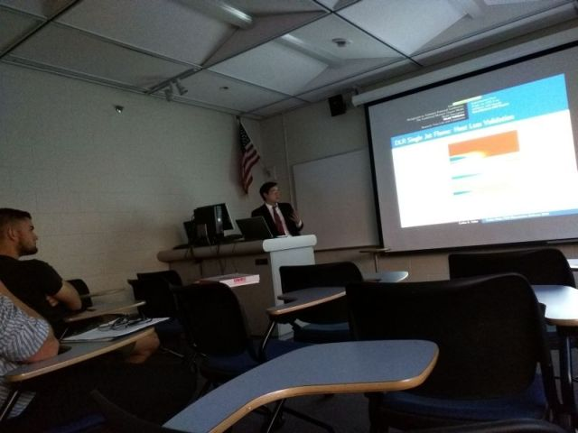
7/9/15
Graduate student Leigh Nash has been selected by NASA for the highly competitive ASTAR fellowship award. The grant will fund research on characterising aviation jet fuels thermal decomposition using novel ellipsometry technique for a period of two years. The research will be carried out in collaboration with NASA's Glenn Research Center.
[More about NASA's ASTAR fellowship]6/26/15
Prof. Subith Vasu has received the 2015 American Chemical Society's (ACS) Doctoral New Investigator (DNI) Award to investigate the chemical kinetics of gasoline mixtures under negative valve operating conditions!! The grant will fund research using shock tube for a period of two years.
[More about ACS DNI award]6/25/15
VasuLab members attended the ASME Turbo Expo 2015 in Montreal, Canada.
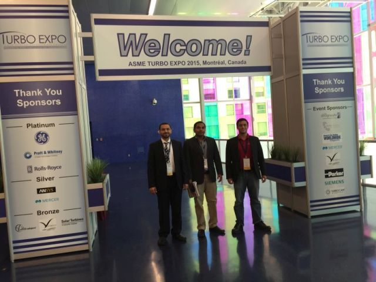
Bader Almansour received the ASME 2015 Young Engineer Travel Award. Congratulations Bader!!

6/25/15
Bader Almansour received the best student paper award at 3rd Laser Ignition Conference, Argonne National Lab, IL. Congratulations Bader!!
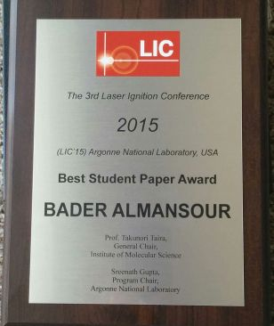
[About Laser Ignition Conference]
6/4/15
VasuLab has been selected by the Department of Energy for the University Turbine Systems Research (UTSR ) award. The proposed effort will investigate super critical CO2 (sCO2) direct fired combustion!! The project cost is $ 1.1 million and will involve experiments and modeling over a period of 3 years.
[See the DOE announcement here]4/28/15
Bader Almansour presented his research on laser ignition and burning velocity measurements in hydrocarbon fuels at the 3rd Laser Ignition Conference, Argonne National Lab, IL.
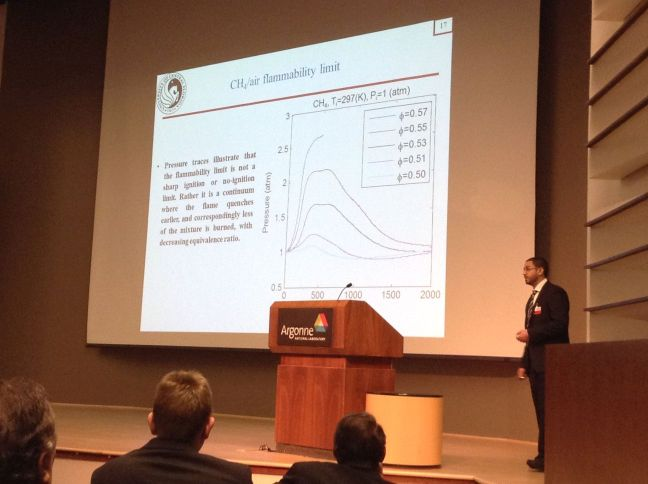
[About Laser Ignition Conference]
4/22/15
Dr. Subith Vasu has been selected to participate in the 2015 Air Force Summer Faculty Fellowship program.
4/21/15
SPACEX selects graduate student Kyle Thurmond for paid internship.
Kyle will be spending Fall 2015 in California working with their engineers on designing rockets and space vehicles. SPACEX website
4/21/15
NASA Kennedy Space Center researchers visits VasuLab.
NASA researchers posing with VasuLab members Joseph Lopez and Kyle Thurmond.
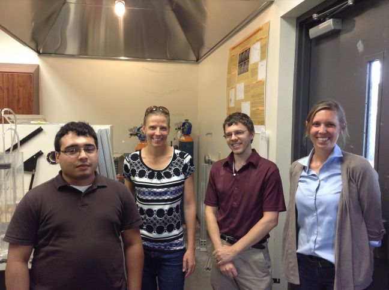

04/14/15
VasuLab participated in the UCF STEAM as part of the NSF funded Innovation through Institutional Integration (ICubed) program.
Vasu Lab's LED-based CO and CO2 sensors for space crafts brought very interesting creativity from Prof. Kevin Haran's advanced drawing class. Below are pictures from the art exhibition event held today. Prof. Vasu and Zachary Loparo along with Prof. Kevin Haran and his students.
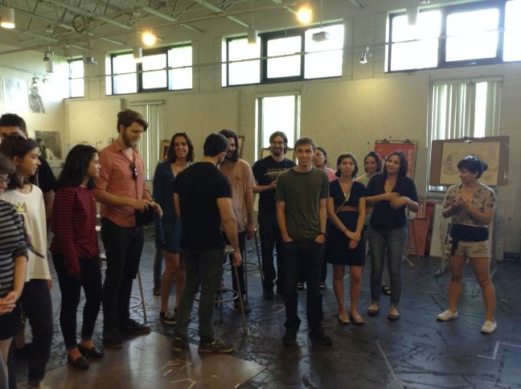
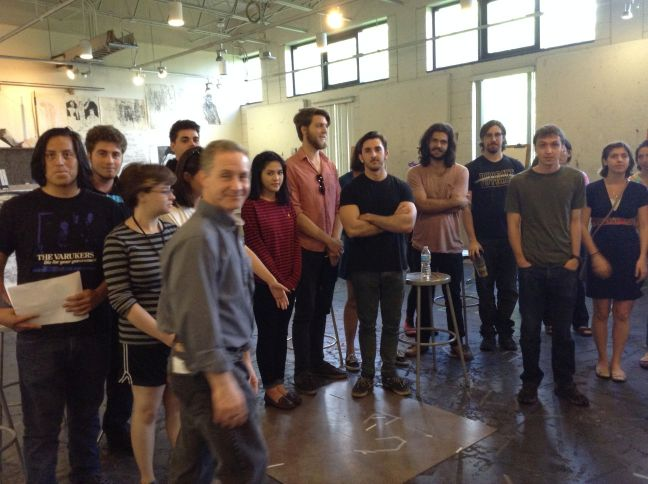
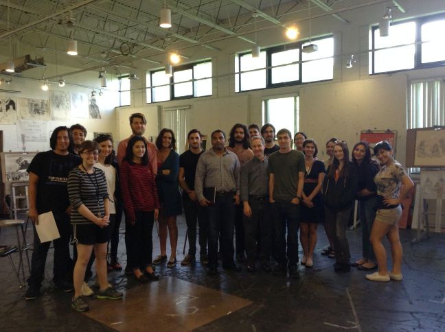
One of the objectives of ICubed is to inform the UCF Community about scientific and engineering concepts. The project is accomplishing this objective by funding the STEAM Gallery which is an activity that encourages STEM faculty and their students to collaborate with Art and Design faculty and their students to create STEM inspired artifacts (sculptures, paintings, illustrations, and posters).
[More about the ICubed program][Click here for Prof. Kevin Haran at UCF School of Visual Arts and Design]
4/9/15
2 papers co-authored by our group will be presented at the ASME TurboExpo, Montreal, Canada, 15-19 June 2015.
- Bader Almansour, Joseph Lopez, Luke Thompson, Ghazal Barari, Subith S. Vasu, Ignition and Flame Propagation in Oxy-Methane Mixtures Diluted with CO2, paper no: GT2015-43355.
- Carlos Velez, Scott Martin, Aleksandar Jemcov, Subith Vasu, LES simulation of an enclosed turbulent reacting methane jet with the tabulated premixed CMC method, paper no: GT2015-43788.
Congratulations to Bader Almansour for receiving the 2015 ASME Young Engineer Travel Award.
[Click here for the ASME TurboExpo 2015 website]
4/9/15
Congratulations to Luke Thompson for successfully defending his M.S. thesis. Luke will be joining Mitsubishi Hitachi Power Systems Americas in Orlando after graduation. Below is a very happy Luke.
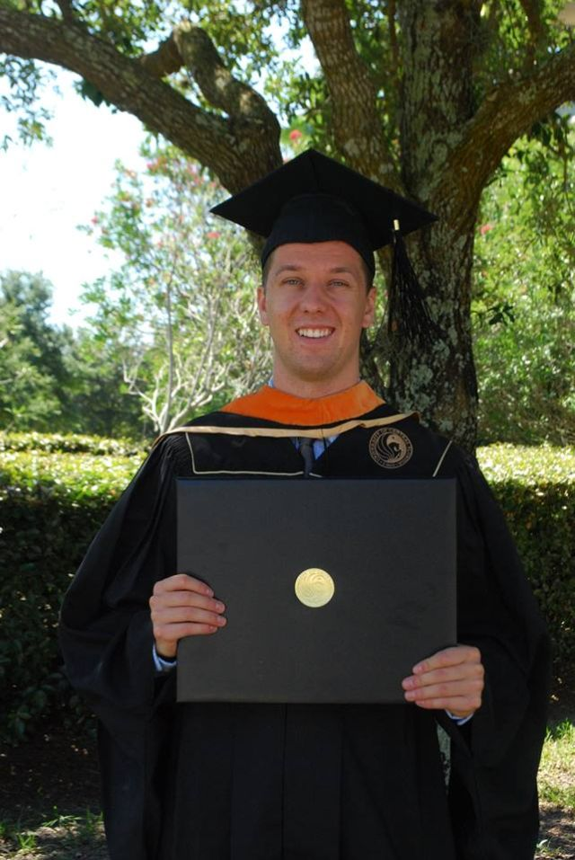4/8/15
Congratulations to Zachary Loparo for winning the prestigious 2015 NSF Graduate Fellowship.
[Click here for NSF fellowship information][Click here for link to UCF today article]
[Click here for link to MAE Department News]
Following students were selected by DOE SULI to conduct 2015 summer research at national labs:
- Zachary Loparo - Sandia National Labs
- Leigh Nash - Argonne National Lab
- Joseph Lopez - Argonne National Lab
4/6/15
We have formed a new student group at UCF called Combustion and LAser Diagnostics Society (CLADS). This is for all students interested in our research and applications. Please contact PhD student Batikan Koroglu for information about joining this group.
4/2/15
Congratulations to Zachary Loparo for winning second prize at the annual showcase of undergraduate research excellence competition (UCF).
[Click here for additional information]
2/19/15
Following students won best presentation awards at the MAE research day:
- Zachary Loparo (1st place)
- Luke Thompson (3rd place)
- Joseph Lopez (3rd place)
02/6/15
18th Annual FAA Commercial Space Transportation Conference, 2/4-5/2015, Washington, D.C.
Graduate Student Kyle Thurmond presented VasuLab's LED-based gas sensors at this meeting.
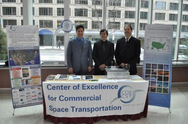
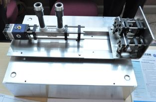
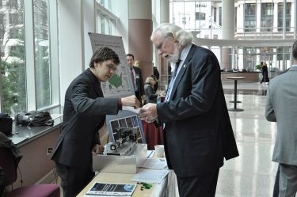
[Click here for the conference website]
1/12/15
2 papers co-authored by our group were presented at the AIAA SciTech, Kissimmee FL, 5-9 Jan. 2015.
- Carlos Velez, Scott Martin, Subith Vasu, Unsteady RANS Simulation of an Enclosed, Turbulent Reacting Methane Jet with the Premixed CMC Method, Paper no: AIAA 2015-0419.
- Luke Thompson, Greg Natsui, Carlos Velez, Jayanta S. Kapat, Subith Vasu, Experimental study of transverse jet mapping using PLIF, Paper no: AIAA 2015-1023.
[Click here for the conference website]
11/24/14
Congratulations to Batikan Koroglu and Ghazal Barari for passing the PhD candidacy exam.
Congratulations to Bader Almansour for passing the PhD qualifying exam.
8/1/14
7 posters co-authored by our group will be presented at the 35th International Symposium on Combustion, San Francisco, 3-8 August 2014.
- A.C. Terracciano, S.S. Vasu, N. Orlovskaya, Experiments and modeling of advective output from porous combustors using reclaimed fuel sources.
- Carlos Velez, Scott Martin, Subith S. Vasu, Aleksandar Jemcov, Prediction of a Turbulent Enclosed Premixed Hydrogen Flame with the Uniform Conditional Moment Closure Model.
- B. Koroglu, Z. Loparo, R. E. Peale, S. S. Vasu, IR cross-sections, line strengths, and collision broadening coefficients of propanal in gas phase- Amajor biofuels combustion intermediate.
- Luke Thompson, Bader Almansour, Joseph Lopez, Leonid Glebov, Subith S. Vasu, Laser ignition and flame development in premixed conventional and alternative fuel mixtures.
- Carlos Velez, Scott Martin, Subith S. Vasu, Aleksandar Jemcov, The Uniform Conditional Moment Closure Model for Premixed Combustion of a Turbulent Enclosed Methane Jet.
- G. Barari, S. S. Vasu, Improved kinetic model and HCCI engine simulations of diisopropyl ketone ignition.
- K. Thurmond, W.P. Partridge Jr., R. Connatser, S. S. Vasu, Design and Validation of LED-based absorption sensor for simultaneous detection of CO and CO2.
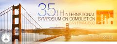
[Click here for the conference website]
8/1/14
Congratulations to Carlos Velez for winning Mcknight Doctoral Fellowship.
[Click here for the McKnight scholarship information]
8/1/14
Congratulations to Luke Thompson for winning NASA's Florida Space Grant Fellowship.
[Click here for additional information]
07/19/14
CAMPCONNECT 2014
Vasu Lab participated in this program. The middle-school students are visiting UCF as part of campconnect 2014- a program to generate interest in STEM topics, especially among minorities and under-represented children.
[Click here for additional information]
06/22-6/27/14
Graduate students Carlos Velez, Anthony Terracciano, Kyle Thurmond, Luke Thompson, and Bader Almansour attended the 2014 Combustion Summer School in Princeton
6/26/14
Subith Vasu presented an invited talk at the Instituto Tecnologico de Aeronautica- ITA in Sao Jose dos Campos - Brasil
5/22/14
Subith Vasu presented an invited talk at the National Energy Technology Lab- NETL in Morgantown, WV
4/16/14
Congratulations to Owen Pryor for successfully defending the Honors in the Major Thesis
4/11/14
Vasu Lab is one of the invited presenters at the 2nd Laser Ignition Conference. We will be presenting the following paper-Fundamental Laser Ignition Studies of Hydrocarbon Fuels, by Subith S. Vasu, Bader Almansour, Luke Thompson, Joseph Lopez, Leonid Glebov.
Dates: April 22-25, 2014
Venue: Yokohama, Japan
[Click here for the conference website]
4/1/14
Congratulations to Carlos Velez for passing his PhD candidacy exam.
3/7/14
Congratulations to Zach Loparo for being selected as one of the DOE SULI participants.
12/1/13
1st Indo-US Joint Workshop on Advanced Turbo-Machinery
Vasu Lab is one of the organizers involved in the upcoming 1st Indo-US Joint Workshop on "Advanced Turbo-Machinery: Power Generation and Transportation for a Sustainable and Environmentally Responsible Future"
Dates: January 6-7, 2014
Venue: IIT Bombay, Mumbai, India
[Click here for the workshop flyer]
11/26/13
Congratulations to Kyle Thurmond for successfully defending the Honors in the Major Thesis and securing an internship with Siemens Energy Inc. in Orlando.
10/15/13
5 papers co-authored by our group were presented at the Eastern States Section of the Combustion Institute meeting at Clemson.
- G. Barari, B. Koroglu, S.S. Vasu, J.E Dec, C.A Taatjes, HCCI engine modeling of diisopropyl ketone, a prototypical biofuel
- S.S. Vasu, S.M. Sarathy, A kinetic model for the high-temperature oxidation of n-butanol based on recent shock tube/laser absorption experiments
- A.C. Terracciano, N. Orlovskaya, S.S. Vasu, Development of a Porous Combustor for the Efficient Extraction of Thermal Energy from Liquid and Gaseous Fuels
- Jihad Badra, Ahmed Elwardany, Fethi Khaled, Subith S. Vasu, Aamir Farooq, Measurements of the reaction rates of OH with ketones at high temperature
- K. Thurmond, E. Duenas, S.S. Vasu, W.P. Partridge Jr., Development of a LED-based sensor for simultaneous measurements of CO and CO2 from combustion exhausts
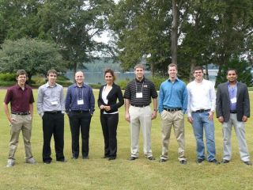
[Group Members at the ESS Conference held at Clemson]
07/23/13
Subith Vasu and his students have been invited to give a presentation at the Oakridge National Labs on exhaust gas sensors. We will be visiting Oakridge on 8/5/2013. We would like to thank the ORAU for travel support.
07/19/13
CAMPCONNECT 2013
Prof. Vasu teaching Rocket 101 to middle-school students. The students are visiting UCF as part of campconnect 2013- a program to generate interest in STEM topics, especially among minorities and under-represented children.
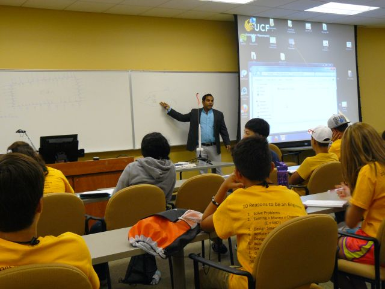
Graduate student Batikan Koroglu explaining the rocket mechanism to students.
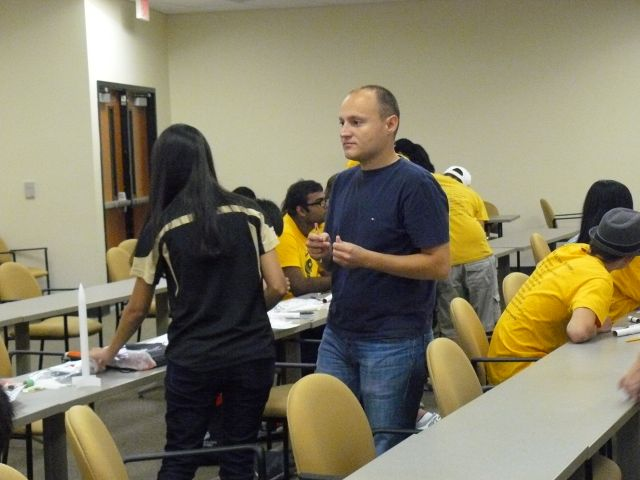
Undergraduate senior Kyle Thurmond helping students troubleshoot their rockets.
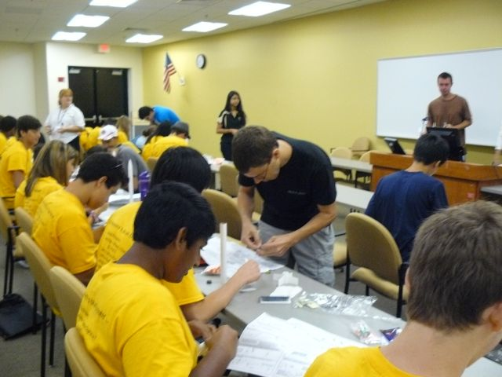
[Click here for additional information]
06/23-6/30/13
Graduate students Ghazal Barari and Batikan Koroglu attended the 2013 Combustion Summer School in Princeton
05/19-5/22/13
Subith Vasu attended the 8th U.S. National Combustion Meeting in Utah
04/15/13
Congratulations to Ghazal Barari for passing the Ph.D. qualifying exam!
04/1/13
Graduate students Ghazal Barari and Batikan Koroglu will be presenting at the MAE research day
08/28-8/29/12
Subith Vasu has been invited to participate in the 1st International RCM workshop held at the Argonne National Laboratory.
08/6-8/8/12
Subith Vasu has been invited to attend the 1st Indo-US workshop on Flame Stabilisation and Combustion Instability held at the Indian Institute of Technology Madras, Chennai, India.
07/29-8/3/12
Subith Vasu attended the 34th International Symposium on Combustion in Warsaw, Poland.
07/26/12
Subith Vasu gave an invited talk about jet fuels combustion at the Space Propulsion Lab in Politecnico di Milano, Italy.
04/26-4/27/12
Subith Vasu attended the the FCAAP Annual Technical Symposium in Tallahassee, Florida.
04/24-4/26/12
Subith Vasu attended the the 2012 SAE world congress in Detroit, Michigan.